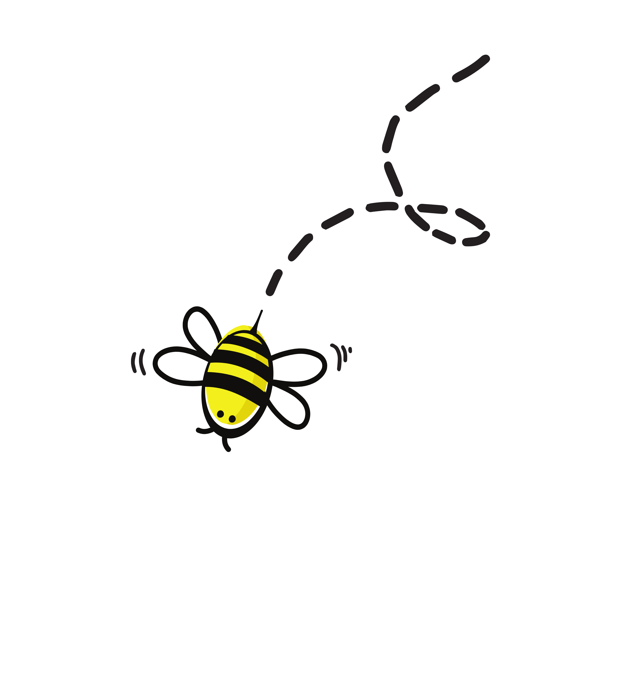
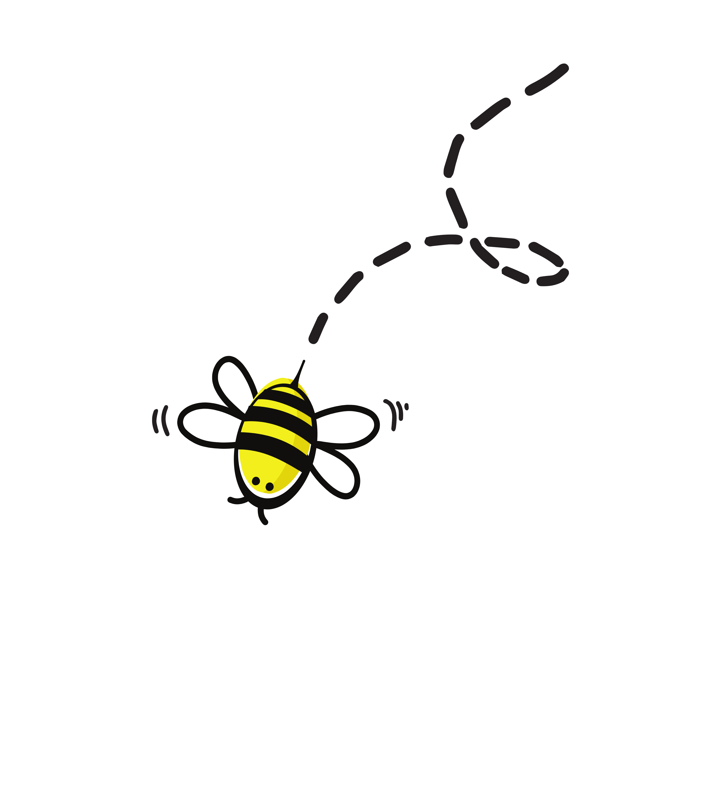

Philipp´s Honigverkauf
Willkommen auf meiner persönlichen Website, auf der ich meinen köstlichen Honig aus eigener Produktion anbiete! Als leidenschaftlicher Imker widme ich mich mit Hingabe der Bienenzucht und der Herstellung hochwertigen Honigs. Mein Honig ist von bester Qualität, rein und frei von Zusatzstoffen. Ich stehe Ihnen gerne für Fragen zur Verfügung und freue mich darauf, Ihnen meinen einzigartigen Honig anzubieten. Genießen Sie die natürliche Süße und die unvergleichlichen Aromen meines Honigs.
 
